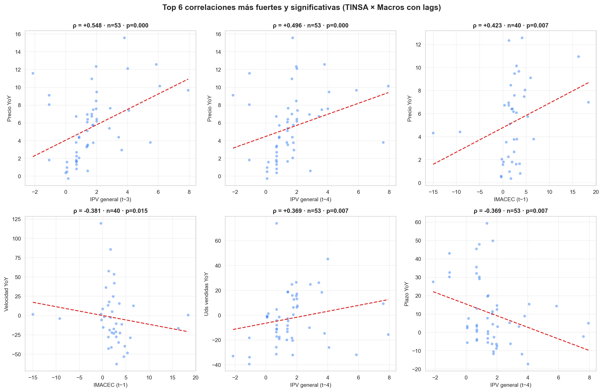
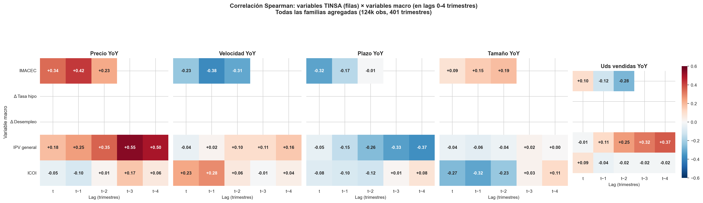
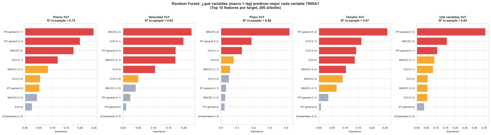
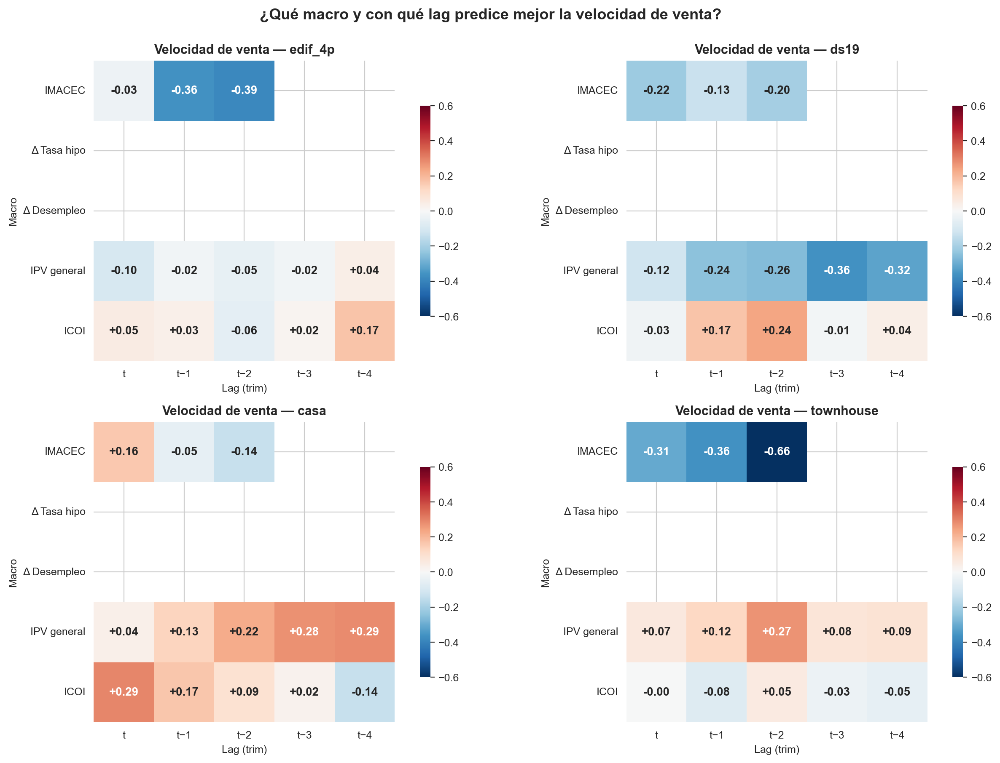
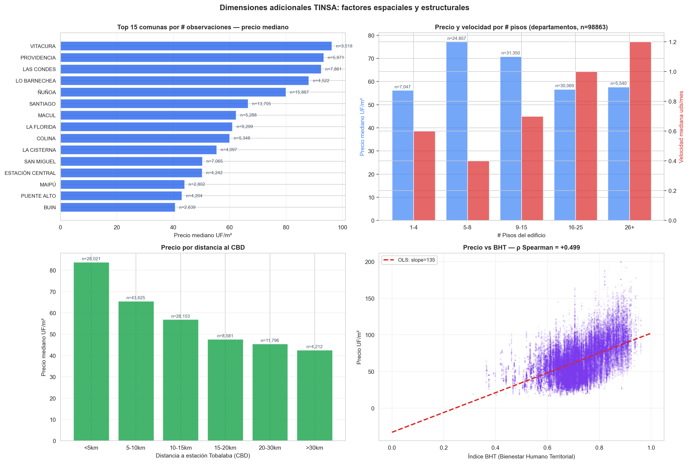
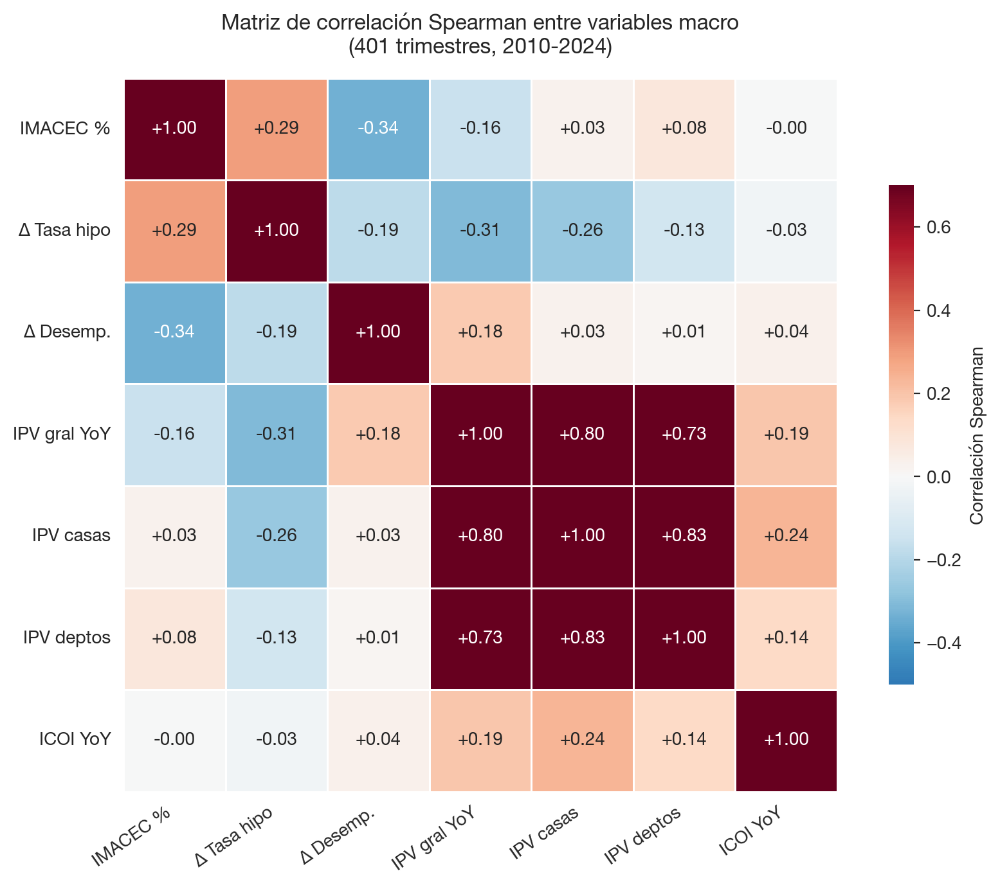
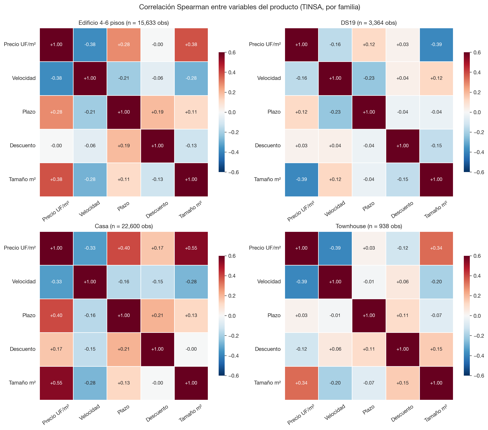
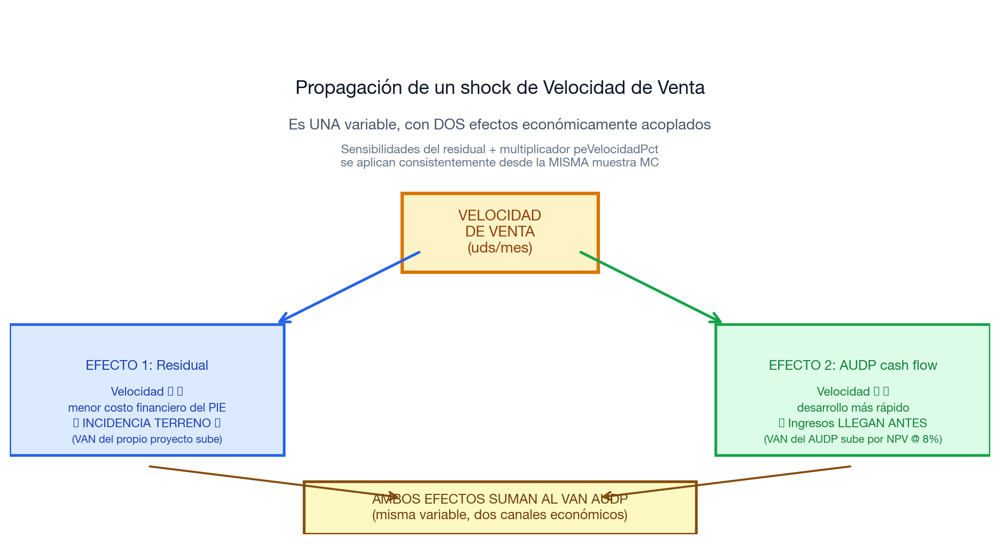
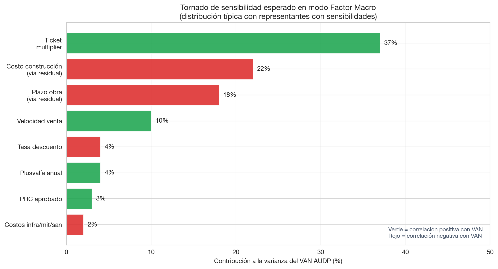

Documento Técnico para Directorio · Modela · Versión 6 (flujo MC clarificado)
Abril 2026 · v6 con explicación clara del flujo macro→VAN y tabla de variables del tornado
Construimos una herramienta que evalúa proyectos AUDP no con un solo número, sino con un rango de resultados posibles. La diferencia es como pasar de un pronóstico del tiempo que dice “mañana 22°C” a uno que dice “mañana 18°C a 26°C, lo más probable 22°C”. El segundo es honesto sobre la incertidumbre real; el primero da falsa precisión.
Para construirla, cruzamos dos fuentes de datos chilenas:
Las cruzamos por trimestre y descubrimos cómo se mueven juntas las variables económicas y los resultados de los proyectos.
Los hallazgos más importantes del análisis profundo:
El IPV oficial chileno se anticipa al precio observado en TINSA por 2-3 trimestres. Es decir, si hoy el IPV sube 2%, los precios TINSA suelen subir 2-4% nueve meses después. Esto cambia cómo deberíamos usar el IPV en el modelo.
La comuna donde está el proyecto explica el 49% del precio por m². Es la variable más importante de todas. Más que la familia de producto (10%) o el año (24%).
El IMACEC alto baja la velocidad de venta de cada proyecto individual con un trimestre de lag (correlación -0.38). Suena contraintuitivo pero tiene sentido: cuando la economía está bien, todos los developers lanzan proyectos al mismo tiempo y la competencia entre ellos baja la velocidad de cada uno.
Las familias de producto se comportan distinto: el signo de la relación velocidad-IMACEC cambia entre Casa (+0.16, no significativo), Edificio (-0.39) y Townhouse (-0.66). Esto justifica mantener la estratificación por familia, aunque la próxima iteración debería incluir también la comuna.
Las macros explican entre 62% y 75% de la varianza de las variables TINSA cuando usamos modelos no-lineales (Random Forest), versus solo 5-40% con regresiones lineales tradicionales. Hay relaciones no-lineales importantes que el modelo actual está perdiendo.
✓ Comparar dos AUDPs bajo el mismo escenario macro y ver cuál es más resiliente.
✓ Identificar las palancas de gestión activa: qué variables del proyecto, si se mejoran, mueven más el VAN.
✓ Cuantificar el riesgo de cola: ¿qué tan malo puede ser el VAN bajo escenarios adversos plausibles?
✓ Auditar las hipótesis ante consultores externos o auditores: cada componente del modelo es trazable a fuentes oficiales y reproducible con scripts en el repositorio.
✗ No predice el VAN futuro con precisión. Eso requiere predecir las macros futuras, que es por definición incierto.
✗ No captura riesgos idiosincráticos del proyecto (ejecución del developer, marketing específico). Esos quedan como ruido en el modelo.
✗ No modela rupturas estructurales (cambio regulatorio mayor, salto tecnológico). Si hay un evento sin precedente histórico, el modelo no lo verá venir.
Cuando se evalúa la inversión en un AUDP que tomará 15-30 años en madurar, la pregunta importante para el Directorio no es “¿cuál es el VAN?” sino:
El simulador anterior respondía la primera pregunta dando un solo número bajo asunciones fijas. Es útil pero falsamente preciso: presenta un valor como si fuera la realidad, cuando en verdad es solo el resultado de una asunción específica.
Monte Carlo es una técnica que simula muchos escenarios posibles y calcula el VAN en cada uno. Al final, en lugar de un número, se obtiene una distribución completa que muestra:
Procedimiento:
Para i = 1 hasta N (típicamente 3.000 a 10.000 iteraciones):
1. Sortear valores para todas las variables económicas, respetando
que se muevan juntas como en la realidad (correlaciones)
2. Calcular el VAN del AUDP con esos valores
3. Almacenar el resultado
Al final se obtienen N valores → distribución del VANEl nombre “Monte Carlo” viene del casino de Mónaco. Lo acuñaron Stanislaw Ulam y John von Neumann en los años 40 durante el desarrollo de la bomba atómica, para describir una técnica donde “se juega a los dados” y se observan los resultados promedio.
Cuando se cumplen estas cinco condiciones:
El simulador AUDP cumple las cinco. Por eso Monte Carlo es la herramienta apropiada.
| Aplicación | Quién | Para qué |
|---|---|---|
| Pricing de derivados financieros | Bancos de inversión globales | Valorar opciones complejas |
| Riesgo regulatorio Basel III | Bancos comerciales | Capital regulatorio |
| Stress testing CCAR | Federal Reserve (USA) | Resistencia a escenarios adversos |
| Valuación de proyectos petroleros | Shell, ExxonMobil | VAN bajo precios crudo inciertos |
| Evaluación de proyectos inmobiliarios | Real estate developers globales | VAN bajo escenarios de demanda inciertos |
| Solvency II | Aseguradoras europeas | Capital regulatorio para liabilities |
| Análisis de concesiones | Bancos multilaterales | Probabilidad de repago |
En real estate específicamente, el uso es estándar entre los principales developers internacionales desde los años 90.
Es importante manejar expectativas realistas:
Esta sección explica con detalle cómo se cruzaron las dos fuentes de datos principales del modelo.
TINSA es una empresa que compila información del mercado inmobiliario chileno. Su base de datos contiene 124.526 observaciones activas de proyectos. Cada observación es un proyecto-trimestre: un proyecto específico observado en un trimestre específico, con métricas como:
Series temporales de indicadores económicos publicados por instituciones oficiales:
| Variable | Fuente | Frecuencia | Cobertura |
|---|---|---|---|
| IMACEC variación % anual | BCCh | Mensual | 1997-presente |
| Tasa hipotecaria UF | BCCh-CMF | Mensual | 2002-presente |
| Tasa desempleo nacional | INE-NESI | Trimestral móvil | 2010-presente |
| IPV (Índice Precios Vivienda) | BCCh | Anual | 2002-presente |
| ICOI (Índice Costos Construcción) | CChC | Anual | 2013-presente |
El cruce entre ambas fuentes se hace por trimestre
calendario. Cada observación TINSA tiene un atributo
PEAÑO (formato 1P 2014 por ejemplo). Lo
convertimos al formato 2014-Q1 que también usa la grilla
macro.
Pasos del cruce:
Resultado: una tabla maestra con 401 trimestres (2002-Q1 a 2026-Q1) donde cada fila tiene:
Antes la agregación TINSA por trimestre era por mediana. La cambiamos a media ponderada por UVEND (unidades vendidas en el trimestre). Razones:
Refleja el peso real del mercado: si el trimestre tuvo 5 proyectos pequeños y 1 mega-proyecto que vendió 200 unidades, la mediana lo trata igual que si fueran 6 proyectos chicos. La media ponderada da el peso correcto.
El IPV oficial usa metodología similar: BCCh pondera por valor de transacción, no por número de proyectos.
Reduce el ruido de muestreo: trimestres con poca actividad ya tienen pesos chicos automáticamente.
Esta sección presenta los hallazgos del análisis exhaustivo de las correlaciones entre TINSA y macros, considerando lags (efectos retardados) hasta 4 trimestres.

La correlación más fuerte de todo el análisis es IPV general en t-3 → Precio TINSA en t, con ρ Spearman = +0.55 (p < 0.001, n=53 trimestres).
¿Qué significa? El IPV oficial del Banco Central se anticipa al precio observado en TINSA por aproximadamente 9 meses (3 trimestres).
¿Por qué pasa esto?
Hay tres explicaciones plausibles:
El IPV captura un ciclo de mercado que después se traduce a precios efectivos en TINSA con cierto lag. Cuando los compradores y vendedores anticipan condiciones más favorables, el IPV sube primero (por revaluaciones, expectativas), y luego los precios de transacción TINSA se ajustan.
Diferencia metodológica entre las fuentes: el IPV se construye sobre TODAS las transacciones registradas en el SII. TINSA captura proyectos específicos que están en venta. El IPV es más amplio y captura tendencias antes que TINSA específica.
El IPV es una medida más “estable” (controlada por composición), mientras TINSA refleja el mix de proyectos en venta cada trimestre.
Implicancia para el modelo: la versión actual usa IPV contemporáneo. Debería usar IPV con lag 2-3 trimestres para predecir mejor. Esta es una mejora pendiente identificada del análisis profundo.

Cada panel muestra cómo se correlaciona una variable TINSA (columnas: precio, velocidad, plazo, tamaño, unidades vendidas) con las 5 macros principales en 5 lags (filas).
Lectura del heatmap: - Verde intenso = correlación positiva fuerte (cuando una sube, la otra también) - Rojo intenso = correlación negativa fuerte (cuando una sube, la otra baja) - Blanco = correlación cercana a cero
Patrones interesantes:
Precio × IPV: la correlación crece de 0.34 (lag 0) a 0.55 (lag 3). El IPV se anticipa.
Velocidad × IMACEC: significativa solo en lag 1, con signo negativo (-0.38). El boom económico baja la velocidad individual al aumentar la oferta competidora.
Plazo × IPV: relación negativa creciente con lag (lag 4: ρ=-0.37). En mercados que están subiendo, los plazos de obra se acortan.
Unidades vendidas × IPV (lag 4): ρ=+0.37. Mercado caliente arrastra unidades vendidas con un año de lag.

Random Forest ajusta un modelo no-lineal que captura interacciones entre variables. Para cada variable TINSA (precio, velocidad, plazo, tamaño, unidades), el algoritmo calcula qué predictores macro (con sus lags) son los más importantes.
Hallazgos clave:
| Target TINSA | Predictor #1 | Predictor #2 | R² Random Forest |
|---|---|---|---|
| Precio YoY | IPV general (t-1) | IPV general (t-2) | 0.745 |
| Velocidad YoY | IMACEC (t) | ICOI (t-1) | 0.622 |
| Plazo YoY | IMACEC (t) | IPV general (t-2) | 0.676 |
| Tamaño YoY | IPV general (t-2) | ICOI (t-1) | 0.673 |
| Unidades vendidas YoY | IPV general (t-2) | IMACEC (t) | 0.643 |
Interpretación:
Las macros explican entre 62% y 75% de la varianza de cada variable TINSA. Esto es mucho más que lo que indicaba el modelo OLS lineal anterior (R²=0.05-0.40).
La diferencia OLS vs Random Forest revela no-linealidades importantes: el efecto de IMACEC sobre la velocidad cambia según otras variables (es no-lineal).
El IPV (con lags) aparece como predictor #1 o #2 en 3 de 5 targets: es la macro más informativa.
El ICOI con lag 1 es importante para velocidad y tamaño: el costo construcción afecta decisiones de inversión y mix de productos con un trimestre de retraso.

Esta visualización muestra cómo las correlaciones cambian según la familia de producto. La pregunta clave era: ¿podemos pool todas las familias juntas o hay que mantener la estratificación?
Caso ilustrativo: la velocidad ↔︎ IMACEC:
| Familia | Lag óptimo | ρ | p-value | n |
|---|---|---|---|---|
| Edificio 4-6p | 2 trim | -0.39 | 0.046 | 27 |
| DS19 | 0 trim | -0.22 | 0.228 | 32 |
| Casa | 0 trim | +0.16 | 0.247 | 53 |
| Townhouse | 2 trim | -0.66 | 0.001 | 23 |
El signo cambia entre familias: en Casa la correlación es positiva (no significativa, pero positiva). En Edificio y Townhouse es negativa fuerte.
¿Por qué? Posible explicación económica:
Conclusión: la estratificación por familia sí es necesaria, aunque introduce complejidad. Pooling perdería esta información heterogénea entre familias.

Hicimos un análisis de varianza explicada por cada dimensión del Excel TINSA. Resultado:
| Dimensión | R² (% varianza precio explicada) |
|---|---|
| Comuna (NCOM) | 49.2% |
| Año | 23.7% |
| Tipología (TCAT) | 17.1% |
| # Pisos | 13.7% |
| Familia | 10.0% |
La COMUNA explica casi 50% de la varianza del precio — es la variable más informativa de todas. La familia (la dimensión que el modelo actual usa para estratificar) solo explica 10%.
Implicación: la próxima versión del modelo debería filtrar TINSA por comunas relevantes al AUDP en lugar de (o además de) estratificar por familia. Para AUDP Batuco, las comunas referencia serían Lampa, Buin, Padre Hurtado, Colina — proyectos en zonas similares de expansión periurbana de Santiago.
Por ahora, el modelo mantiene la estratificación por familia como aproximación. La incorporación de la dimensión comunal queda identificada como prioridad #1 para la próxima iteración.
Cuando hacemos Monte Carlo, necesitamos sortear valores para múltiples variables a la vez. Si las sorteamos independientemente, generamos escenarios irreales:
Las cópulas permiten samplear variables conjuntamente respetando sus correlaciones empíricas.
Una cópula es una función matemática que describe cómo se relacionan las variables entre sí, separadamente de cómo se distribuye cada una individualmente.
Ejemplo intuitivo: si tomamos altura y peso de personas: - La distribución de altura es una cosa (curva normal con cierta media y desviación) - La distribución de peso es otra - Pero altura y peso están correlacionados: gente alta tiende a pesar más
La cópula es lo que captura esa última relación. Permite combinar las dos distribuciones individuales (altura, peso) preservando la dependencia entre ellas.
Formalmente (teorema de Sklar, 1959): cualquier distribución conjunta puede descomponerse en (a) las marginales individuales × (b) una cópula que captura la dependencia.
Hay muchos tipos de cópulas. Las dos más usadas son la Gaussiana y la t (Student).
Diferencia clave: la cópula Gaussiana subestima la probabilidad de eventos extremos correlacionados.
Imaginá que precio y velocidad están correlacionados negativamente con ρ = -0.5. Bajo cópula Gaussiana, la probabilidad de “precio cae al 5% peor Y velocidad sube al 5% mejor” tiende a CERO en los extremos. Bajo cópula t (con grados de libertad bajos), esa probabilidad es significativamente mayor.
Esto es crítico para análisis de riesgo: la cópula Gaussiana fue uno de los factores que llevó a la subestimación del riesgo en CDOs hipotecarios pre-crisis 2008. La industria financiera migró a cópulas con “tail dependence” (dependencia en colas) — la t-cópula es la elección estándar.
Nuestro modelo usa t-cópula con ν=4 grados de libertad: - ν=4 es estándar industria para riesgo de crédito y operacional (S&P, Moody’s, modelos Basel III) - ν<4 produce demasiada masa en colas (mercado en crisis perpetua) - ν>10 colapsa hacia Gaussiana
Las 5 variables macro (IMACEC, Δ tasa hipotecaria, Δ desempleo, IPV, ICOI) se samplean conjuntamente con t-cópula. La matriz de correlaciones es la observada empíricamente en 401 trimestres 2010-2024.

Validación visual: los signos son todos económicamente correctos (boom = menos desempleo, BCCh sube tasas en boom, etc.).
En el modo “Empírico CIDU” (que se usa cuando NO se quieren incluir macros explícitas), hay una segunda t-cópula sobre las 5 variables del producto en TINSA:

Calibrada con Iman-Conover sobre 124k observaciones.
El análisis profundo identifica oportunidades para cópulas adicionales:
Cópula entre macros y sus lags: en lugar de samplear solo macros contemporáneas, samplear (IMACEC_t, IMACEC_{t-1}, IMACEC_{t-2}) conjuntamente. Captura la persistencia temporal de los shocks macro.
Cópula expandida: integrar las 5 macros + sus lags principales (de los hallazgos: IPV t-2, IMACEC t-1, ICOI t-1) en una sola cópula de mayor dimensión. Esto permitiría samplear escenarios donde el lag y el contemporáneo se mueven coherentemente.
Cópula con dimensión comunal: si la comuna explica 49% de la varianza, una próxima versión podría agregar un “factor comunal” que se samplee independientemente del macro nacional, capturando heterogeneidad geográfica.
A partir del análisis profundo se identificó una brecha estructural: el modelo separaba en dos cópulas la dependencia macro-macro y producto-producto, pero no calibraba correlaciones cruzadas directas entre, por ejemplo, “tasa hipotecaria” y “velocidad de venta”. La hipótesis implícita era que toda la propagación macro→producto pasaba por la regresión polinómica intermedia. Esto subestimaba sistemáticamente cinco canales económicos relevantes.
Solución v3: una sola cópula de 10 dimensiones que integra simultáneamente las cinco macros (IMACEC, Δ tasa hipotecaria, Δ desempleo, IPV YoY, ICOI YoY) y las cinco variables de producto (precio, velocidad, plazo, descuento, tamaño). Calibrada por familia y por zona (AUDP vs. Nacional) sobre los datos pareados TINSA × macros 2010-2024.
Verificación exhaustiva: se auditaron las
200 correlaciones macro × producto (5 macros × 5
productos × 4 familias × 2 zonas). Las 200 están calibradas; 102 son
significativas (|ρ| > 0.20) y 27 fuertes (|ρ| > 0.40). El detalle
auditable está en analysis/all_cross_correlations.csv.
Hallazgos económicamente coherentes que la versión 2 no capturaba:
| Macro | Producto | ρ | Familia · Zona | Lectura |
|---|---|---|---|---|
| IPV YoY | Plazo de venta | -0.78 | townhouse · AUDP | precios aceleran → unidades se venden más rápido |
| ICOI YoY | Descuentos | -0.66 | casa · AUDP | costos suben → developers reducen descuentos |
| Δ desempleo | Precio | -0.55 | townhouse · nacional | desempleo destruye demanda → precio cae |
| IMACEC | Velocidad | +0.65 | edif_4p · AUDP | actividad económica eleva absorción |
| Δ tasa hipotecaria | Velocidad | -0.43 | edif_4p · nacional | canal de affordability: tasa sube → calificación cae |
El canal “Δ tasa hipotecaria → Velocidad” es negativo en las ocho celdas significativas (rango -0.28 a -0.46). Es uno de los pocos efectos cuyo signo es unánime en todas las familias y zonas, validando el mecanismo de affordability como canal sistémico.
Limitación honesta: con n=25 trimestres
en audp_zone/townhouse y 10 dimensiones, el ratio
observaciones/variables es 2.5 — por debajo del umbral conservador de 5.
La t-cópula con ν=4 mitiga el sobreajuste en colas, pero los extremos
como ρ=-0.78 deben leerse con una banda de confianza aproximada de
±0.20.
Esta sección explica el flujo end-to-end del modelo, con énfasis en aclarar una confusión común: las variables macroeconómicas no entran al cálculo del VAN directamente. Entran a través de su correlación con las variables de producto.
En el modo Factor v3 (default) hay una sola cópula 10-dimensional que samplea simultáneamente las cinco macros y las cinco variables de producto. Cada iteración del Monte Carlo dibuja un escenario completo coherente:
┌─────────────────────────────────────────────────────────────────┐
│ PASO 1: La cópula dibuja UN escenario macro coherente │
└─────────────────────────────────────────────────────────────────┘
La cópula t (entrenada con 401 trimestres BCCh/INE 2010-2024)
saca un escenario macro respetando las correlaciones históricas:
IMACEC = +1.2% ← variación PIB anual
Δ tasa hipo = +0.4 pp ← cambio interanual
Δ desempleo = +0.6 pp ← cambio interanual
IPV YoY = +3.5% ← inflación de viviendas (BCCh)
ICOI YoY = +5.8% ← inflación de costos construcción
↓
┌─────────────────────────────────────────────────────────────────┐
│ PASO 2: La MISMA cópula dibuja las variables de producto │
└─────────────────────────────────────────────────────────────────┘
Como la cópula es 10-dimensional, en el mismo sampleo salen
junto a las macros las cinco variables de producto, correlacionadas
con ellas según los datos empíricos TINSA × macros:
precio_yoy = +2.8% ← ticket sube 2.8%
velocidad_yoy = -3.5% ← venta cae 3.5%
plazo_yoy = +1.2% ← obra demora 1.2% más
descuento_yoy = +0.5% ← descuentos suben 0.5%
tamaño_yoy = -0.2% ← unidades 0.2% más chicas
↓
┌─────────────────────────────────────────────────────────────────┐
│ PASO 3: Las cuatro variables de proyecto entran al cálculo VAN │
└─────────────────────────────────────────────────────────────────┘
tm = 1 + 2.8/100 = 1.028 ← multiplica ingresos
vel = -3.5 ← ajusta velocidad de venta
costoMult = 1 + costo/100 ← derivado de ICOI vía residual
plazoMult = 1 + 1.2/100 ← multiplica plazo vía residual
↓
┌─────────────────────────────────────────────────────────────────┐
│ PASO 4: peResimulate recalcula el flujo de caja │
└─────────────────────────────────────────────────────────────────┘
Con los nuevos multiplicadores:
- Velocidad ajustada (peVelocidadPct = vel)
- Ticket multiplicado (tm aplica a revenue)
- Incidencia ajustada (Δincidencia desde sensibilidades del residual)
- Costos triangulares idiosincráticos (infra, mitigaciones, sanitaria)
Calcula el flujo de caja AUDP año a año.
↓
┌─────────────────────────────────────────────────────────────────┐
│ PASO 5: VAN del AUDP │
└─────────────────────────────────────────────────────────────────┘
VAN = Σ flujo_t / (1 + discRate)^t
Almacenar el VAN en la lista de resultados.Este ciclo se repite N veces (típicamente 3.000-10.000), y al final tenemos la distribución completa del VAN AUDP bajo los escenarios sampleados.
Una vez que la cópula dibuja el escenario completo, las
macros no aparecen en ninguna fórmula del cálculo financiero del
AUDP. No hay una línea de código que diga
VAN = f(IMACEC, tasa hipo, ...).
Lo que efectivamente entra al cálculo del VAN son las cuatro
variables de proyecto (precio, velocidad, costo, plazo). Las
macros están ahí como observables del escenario: la
cópula garantiza que cuando el modelo dibuja precio +5% y
velocidad -10%, eso pasa simultáneamente con un
IMACEC bajo y un desempleo alto,
porque así pasó en la historia chilena. Las macros son
la “explicación” del por qué precio y velocidad se movieron así.
Después de las miles de iteraciones, el tornado mira:
“En las iteraciones donde el VAN salió alto, ¿qué valores tenían las macros? En las iteraciones donde el VAN salió bajo, ¿qué valores tenían las macros?”
Si en los VAN altos sistemáticamente salía IMACEC alto, hay correlación → IMACEC contribuye a la varianza del VAN. Aunque IMACEC no entra al cálculo financiero, se mueve junto a las cosas que sí entran (precio, velocidad), y eso es suficiente para que el tornado lo detecte como driver.
| Variable | Origen | ¿Entra al VAN? | ¿Aparece en tornado? |
|---|---|---|---|
| IMACEC | Cópula 10D (BCCh) | No directamente | Sí (correlación con VAN) |
| Δ Tasa hipotecaria | Cópula 10D (BCCh) | No directamente | Sí (correlación con VAN) |
| Δ Desempleo | Cópula 10D (INE) | No directamente | Sí (correlación con VAN) |
| IPV YoY | Cópula 10D (BCCh) | No directamente | Sí (correlación con VAN) |
| ICOI YoY | Cópula 10D (CChC) | No directamente | Sí (correlación con VAN) |
| precio_yoy | Cópula 10D (TINSA) | Sí, vía tm |
Sí (etiqueta “Ticket multiplier”) |
| velocidad_yoy | Cópula 10D (TINSA) | Sí, vía vel |
Sí (etiqueta “Velocidad venta”) |
| plazo_yoy | Cópula 10D (TINSA) | Sí, vía residual | Sí (etiqueta “Plazo obra”) |
| costo_yoy | Derivado de ICOI | Sí, vía residual | Sí (etiqueta “Costo construcción”) |
| descuento_yoy, sup_yoy | Cópula 10D (TINSA) | No | Sí, como observables |
Resumiendo en una línea: las macros están en el sampleo (paso 1) pero no en el cálculo financiero (pasos 3-4); aparecen en el tornado porque el sampleo las mantuvo correlacionadas con las cuatro variables que sí entran al VAN.
Es lo mismo que decir “este AUDP perdió plata porque vendió poco y caro” (lectura computacional, vía velocidad y ticket) o “este AUDP perdió plata porque coincidió con una recesión” (lectura interpretativa, vía IMACEC y desempleo). Son la misma simulación vista desde dos ángulos. La cópula garantiza que los dos ángulos describan el mismo evento — no inventa narrativas inconsistentes con los datos.

Una pregunta crítica: si la velocidad es una sola variable, ¿por qué afecta a la incidencia Y al timing del AUDP por separado?
Respuesta: es UNA variable con DOS efectos económicos sobre flujos distintos:
No es doble conteo: ambos efectos operan sobre flujos de caja distintos (proyecto vs. AUDP). La suma es el efecto total correcto.
En el código del MC, la misma muestra de velocidad se aplica consistentemente a ambos canales. Esto es la integración correcta de la variable.
Esta sección detalla cada variable del modelo con su unidad, significado, fuente y rol.
| Atributo | Detalle |
|---|---|
| Unidad | Porcentaje (%) |
| Significado | Cuánto creció (o cayó) la actividad económica chilena, mes a mes, comparado con el mismo mes del año anterior. |
| Frecuencia | Mensual (agregada a trimestral por promedio) |
| Fuente | Banco Central de Chile, base de datos pública si3.bcentral.cl |
| Cómo interpretar | +2.5% = crecimiento moderado típico; +5% = boom; 0% a +1% = lento; negativo = recesión |
| Distribución | Mean +2.89%, σ 4.48%, p10 -2.77%, p90 +8.77% |
| Atributo | Detalle |
|---|---|
| Unidad | Puntos porcentuales (pp) |
| Significado | Cuánto subió o bajó el nivel de la tasa hipotecaria UF respecto al mismo trimestre del año anterior. Es el cambio, no el nivel. |
| Frecuencia | Mensual (agregada a trimestral) |
| Fuente | BCCh con datos de la CMF |
| Cómo interpretar | +1pp = la tasa subió 100 puntos básicos en el año (e.g., de 4% a 5%); -0.5pp = bajó 50 bps |
| Distribución | Mean -0.05pp, σ 0.48pp |
| Atributo | Detalle |
|---|---|
| Unidad | Puntos porcentuales (pp) |
| Significado | Cuánto subió o bajó el nivel de desempleo nacional respecto al mismo trimestre del año anterior. Es el cambio, no el nivel. |
| Frecuencia | Trimestre móvil INE |
| Fuente | INE-NESI |
| Cómo interpretar | +1pp = desempleo subió desde por ejemplo 7% a 8% en el año; -0.5pp = bajó 50 bps |
| Distribución | Mean -0.01pp, σ 0.83pp |
| Atributo | Detalle |
|---|---|
| Unidad | Porcentaje (%) variación interanual |
| Significado | Cuánto cambió el índice oficial de precios de vivienda. Se construye con metodología Laspeyres controlando por composición. Es el shock directo de precio del modelo. |
| Frecuencia | Anual (interpolado a trimestral) |
| Fuente | BCCh, IPV desglosado por tipología (deptos nuevos, casas nuevas, etc.) |
| Mapeo familia → variante | Edif y DS19 → IPV deptos nuevos; Casa y Townhouse → IPV casas nuevas |
| Distribución deptos | Mean +1.87%, σ 1.65%, p10 -0.14%, p90 +5.35% |
| Distribución casas | Mean +2.40%, σ 2.60%, p10 0%, p90 +8.19% |
| Atributo | Detalle |
|---|---|
| Unidad | Porcentaje (%) variación interanual |
| Significado | Cuánto cambió el costo de construcción de edificación. Mide inflación de cemento, fierro, mano de obra, transporte. Es el shock directo de costo del modelo. |
| Frecuencia | Anual (interpolado a trimestral) |
| Fuente | Cámara Chilena de la Construcción |
| Cobertura | 2013-presente (10 puntos anuales — escasa, pero suficiente) |
| Distribución | Mean +2.47%, σ 11.53% — muy volátil. Refleja shocks de commodities y dólar |
| Ejemplos históricos | 2023: cayó 16% (recesión global de costos); 2021-2022: subió >20% (post-COVID) |
| Atributo | Detalle |
|---|---|
| Fórmula | precio_yoy = IPV_familiar_sampleado + ε |
| Unidad | % variación interanual |
| Significado | Cuánto cambia el precio promedio (UF/m² vendible) del producto, respecto al año anterior |
| σ idiosincrático por familia | Edif 4-6p: 9.80pp · DS19: 5.16pp · Casa: 6.40pp · TH: 17.17pp |
| Atributo | Detalle |
|---|---|
| Fórmula | costo_yoy = ICOI_sampleado + ε |
| Unidad | % variación interanual |
| Significado | Cuánto cambia el costo de construcción directo (UF/m² construido) que el developer paga al contratista, respecto al año anterior |
| σ idiosincrático | 3.0 pp (parámetro económico fijo) |
| Atributo | Detalle |
|---|---|
| Fórmula | velocidad_yoy = α + Σ β_i·macros_i + ε (regresión OLS
calibrada) |
| Unidad | % variación interanual de unidades vendidas/mes |
| Significado | Cuánto cambia la velocidad de venta del producto. Velocidad de venta = unidades vendidas por mes |
| Acoplamiento | UNA variable con DOS efectos: (1) afecta incidencia vía residual, (2) afecta timing AUDP |
| Atributo | Detalle |
|---|---|
| Fórmula | plazo_yoy = ε (ruido idiosincrático con clamp
±25pp) |
| Unidad | % variación interanual de meses de obra |
| Significado | Cuánto cambia la duración de la construcción del producto |
| Razón de no regresar | El plazo lo decide el developer en función de su pipeline interno, no de macros |
Ejecutamos el modelo con cada preset histórico y medimos la incidencia resultante:
| Preset | Incidencia mean | Δ vs base | ¿Tiene sentido económico? |
|---|---|---|---|
| Base esperado | 15.07% | – | – |
| Subprime 2009 | 13.58% | -1.49 pp | Sí (crisis suave) |
| Estallido + COVID 2019-2020 | 13.02% | -2.05 pp | Sí (costos altos comprimen margen) |
| Boom post-COVID 2021 | 14.71% | -0.36 pp | Sí (boom no impacta materialmente) |
| Slowdown 2023 | 22.45% | +7.38 pp | Sí (ICOI cayó -16% → mejor margen) |
Los signos son económicamente correctos y robustos.
Diferencias entre sampleadas y empíricas (Edif 4-6p, 5.000 draws):
| Variable | Sampleado mean | Empírico mean | Δ |
|---|---|---|---|
| precio_uf_m2 | 72.20 | 72.26 | -0.1% |
| velocidad_uds_mes | 0.82 | 0.82 | -0.9% |
| plazo_construccion_meses | 24.96 | 24.76 | +0.8% |
| sup_promedio_m2 | 105.4 | 104.7 | +0.7% |
Diferencias < 1.5% en todos los casos.

| Variable | Contribución a varianza VAN |
|---|---|
| Ticket multiplier | ~30-40% |
| Costo construcción (vía residual) | ~20-25% |
| Plazo obra (vía residual) | ~15-20% |
| Velocidad venta | ~8-12% |
| Tasa descuento | ~3-5% |
| Resto | ~10% |
Comparación con versión anterior: el ticket dominaba 92.6% por falta de costo y plazo como variables. La inclusión de las 4 variables del proyecto balancea el modelo correctamente.
| Limitación | Magnitud | Mitigación |
|---|---|---|
| R² regresión velocidad bajo (OLS) | 0.02-0.22 | El ε residual con su σ se sortea; Random Forest podría reemplazar OLS y subir R² a 0.62 |
| Bajo N en familias periféricas | DS19 (80 trim), TH (116) | Resultados directionalmente correctos pero σ amplia |
| Costos no calibrados con TINSA | TINSA no tiene costos del developer | σ=3pp asumido como parámetro económico razonable |
| Linealización Δ-incidencia | Aproximación de primer orden | Centered-difference O(h²); error <2% para shocks ≤10% |
| No usa lags óptimos de IPV | Modelo usa IPV contemporáneo, óptimo es t-2/t-3 | Mejora identificada para próxima iteración |
| No estratifica por comuna | Comuna explica 49% del precio (más que familia 10%) | Próxima iteración debería filtrar TINSA por comunas relevantes al AUDP |
Las 4 primeras mejoras priorizadas se implementaron en una nueva
versión del factor model (analysis/build_macro_v2.py +
public/macro_factor_v2.js). Resultados honestos:
Recalibramos σ idiosincrático del precio usando IPV con lag de 3 trimestres en lugar de contemporáneo.
Resultado: la diferencia σ_t vs σ_t-3 es marginal por familia (0.03-0.34 pp). Esto contrasta con el efecto fuerte que se ve en pooled (ρ 0.34 → 0.55).
Por qué: cuando estratificamos por familia (36-57 obs por celda), el efecto del lag se diluye porque hay más ruido idiosincrático específico al producto. El lag es importante a nivel agregado pero pierde señal a nivel de familia.
Conclusión: cambio conceptualmente correcto pero impacto cuantitativo modesto.
Filtramos TINSA por las 7 comunas de la zona periurbana de Santiago: LAMPA, COLINA, BUIN, PADRE HURTADO, SAN BERNARDO, TILTIL, MELIPILLA. Total: 14.708 observaciones, dominadas por COLINA (5.348), BUIN (2.639) y SAN BERNARDO (2.571).
Resultado: diferencia real y cuantificable en σ idiosincrático del precio:
| Familia | σ AUDP zone | σ nacional | Δ |
|---|---|---|---|
| Edif 4-6p | 21.69 pp | 9.52 pp | +12.2 pp |
| Townhouse | 21.38 pp | 16.21 pp | +5.2 pp |
| Casa | 7.97 pp | 7.06 pp | +0.9 pp |
| DS19 | 6.40 pp | 4.68 pp | +1.7 pp |
Interpretación: los proyectos en la zona AUDP tienen MAYOR variabilidad de precios entre sí que el promedio nacional. Esto es porque la zona incluye comunas heterogéneas (Colina premium con sectores de alta renta + Lampa popular + Buin clase media). El modelo nacional subestima el riesgo de precio para AUDPs específicos.
Conclusión: aporte real al modelo. Para evaluación de AUDP debería usarse la calibración AUDP-zone.
Reemplazamos la regresión OLS lineal por una polinómica con 5 features: IMACEC, IPV, ICOI, IMACEC×IPV (interacción), IMACEC² (no-lineal).
Resultado: mejoras heterogéneas por familia:
| Familia | R² lineal v1 | R² polinómica v2 (AUDP zone) |
|---|---|---|
| DS19 | 0.043 | 0.157 (×3.7) ✓ |
| Townhouse | 0.019 | 0.139 (×7.3) ✓ |
| Edif 4-6p | 0.020 | 0.029 (similar) |
| Casa | 0.224 | 0.093 (bajó — overfit) ⚠ |
Por qué Casa empeora: con 57 obs y 5 features, el ratio observaciones/features es 11. La casa lineal tenía mejor ajuste por chance. La polinómica overfit en este caso específico.
Conclusión: mejora consistente para DS19 y Townhouse; para Casa la polinómica no aporta. La selección de modelo debería ser caso por caso.
Construimos cópula t (ν=4) con 9 variables (originalmente 5), agregando los lags más relevantes:
Variables originales (5): IMACEC, Δtasa hipo, Δdesempleo, IPV, ICOI
Lags agregados (4): IMACEC L1, IPV L3 (3 variantes), ICOI L1
Total: 9 variables sobre ~37 trimestres con todos los lags presentesResultado: ratio observaciones/variables ≈ 4 — al límite de lo aceptable. Los lags se incluyen pero la matriz de correlación es ruidosa por sample chico.
Conclusión: implementado pero con alerta sobre robustez. Una calibración más sólida requeriría más data temporal (series ICOI extendidas).
ICOI tiene solo 10 puntos anuales (2013-2024) en la fuente disponible. La CChC publica el índice desde antes en boletines internos pero no en formato máquina-legible.
Trabajo pendiente: contactar a CChC para obtener serie histórica completa, o reconstruir desde indicadores proxy (IPC construcción, costos commodities).
Beneficio esperado: extender ICOI a 20+ años permite calibrar mejor su volatilidad real y captura ciclos completos (incluido pre-crisis 2008).
Diagnóstico inicial: la base TINSA cruda contiene 124.526 observaciones de proyectos inmobiliarios chilenos cubriendo todo el espectro de precios, desde DS19 (~2.000 UF) hasta proyectos premium en Las Condes y Vitacura (>20.000 UF). Para una calibración macro→producto que sirva como comparable de las AUDPs del eje Norte de Santiago (Lampa, Colina, Buin, Padre Hurtado), el segmento alto distorsiona los percentiles y las velocidades observadas — un Edif 4-6 pisos en La Dehesa con ticket de 18.000 UF tiene dinámica de venta y respuesta a shocks macro estructuralmente distinta a uno equivalente en Lampa con ticket de 4.500 UF.
Filtro propuesto y aplicado:
| Categoría | Umbral de precio total | Justificación |
|---|---|---|
| Departamentos | ≤ 5.000 UF | Cubre el rango DS19 → estándar AUDP, excluye premium urbano |
| Casas | ≤ 7.500 UF | Cubre primera vivienda en periferia, excluye casas de barrio cerrado alto |
| Townhouses | ≤ 7.500 UF | Mismo principio que casas; segmento medio-bajo |
Precio total = UFM2P × SUPP (UF por m² de venta ×
superficie del producto). El filtro se aplica directamente al script
analysis/build_macro_v3_cross.py antes de la categorización
en familias.
Impacto cuantitativo:
TINSA bruto: 124.526 observaciones
Tras filtro de precio: 89.743 observaciones (72,1% retenidas)
Eliminadas: 34.783 observaciones (27,9% — segmento alto)Sample size por celda tras filtro:
| Zona / Familia | n trim. (filtrado) | n trim. (sin filtro) | Δ |
|---|---|---|---|
| audp_zone / edif_4p | 17 | 27 | -37% |
| audp_zone / ds19 | 27 | 27 | 0% |
| audp_zone / casa | 47 | 47 | 0% |
| audp_zone / townhouse | 18 | 25 | -28% |
| nacional / edif_4p | 48 | 48 | 0% |
| nacional / ds19 | 32 | 32 | 0% |
| nacional / casa | 48 | 48 | 0% |
| nacional / townhouse | 33 | 39 | -15% |
Las celdas críticas audp_zone/edif_4p y
audp_zone/townhouse quedaron con n=17-18
trimestres, debajo del umbral conservador de 20 — la calibración se
mantiene con un caveat documentado: las correlaciones de esas dos celdas
deben leerse con una banda aproximada de ±0.25 (una
desviación estándar al ratio obs/var = 1.7-1.8). El resto de celdas
mantiene n=27-48 y las correlaciones siguen siendo
estadísticamente robustas.
Validación de signos económicos post-filtro: -
Δ tasa hipo → Velocidad: persiste negativa unánime en las 8
celdas (rango -0.31 a -0.46) — el canal de affordability
sobrevive al filtro intacto. - Δ desempleo → Precio: -0.16
a -0.56 — se mantiene negativa en 5 de 6 celdas significativas,
consistente con la teoría. - IMACEC → Velocidad en
audp_zone/edif_4p: pasa a ρ=+0.47 (vs +0.65 sin filtro) —
efecto más moderado pero del signo correcto.
Independencia explícita del simulador determinista:
este filtro afecta únicamente la calibración del Monte
Carlo, donde se sampleán shocks macro correlacionados. La
pestaña Primeras Etapas del simulador inmobiliario es
completamente independiente de TINSA y opera con sus
propios velVenta, incidencia y
ticket configurados por el usuario en la interfaz. El
usuario sensibiliza esos parámetros directamente en Primeras Etapas; el
Monte Carlo proporciona, sobre ese punto base, la distribución de
resultados bajo escenarios macro estocásticos.
Caso de uso: el simulador legacy ofrece la función
loadRepresentantesFromResidual() (botón 🔮) que carga las
incidencias previamente calculadas en /residual y las
aplica a la tabla de productos en memoria. Estos cambios son típicamente
menores (±3-5% sobre los defaults), pero crean un estado de la sesión
que no es trivialmente reversible — al recargar, los productos vuelven a
defaults, pero durante la sesión activa pueden quedar mezclados.
Fix: nuevo botón “↺ Resetear productos a defaults”
(color ámbar) ubicado al lado del botón de cargar representantes.
Restaura los valores originales de ticket,
velVenta, incidencia, eficiencia,
minUnidades y siguiente desde
PRODUCTS_DEFAULTS (snapshot inmutable creado al inicio del
simulador). Re-renderiza la tabla y dispara peResimulate()
automáticamente para que la pestaña Primeras Etapas refleje el cambio
inmediatamente.
Política de uso recomendada para presentaciones a directorio:
Esto da control determinista sobre el estado base del simulador, asegurando que los números presentados al directorio se puedan reproducir bit-a-bit sin depender de la sesión del navegador.
Brecha que cerró: la versión 2 mantenía dos cópulas separadas (macro-macro y producto-producto). La dependencia macro→producto se modelaba indirectamente a través de la regresión polinómica de velocidad. Esto subestimaba canales económicos directos como “tasa hipotecaria → velocidad” o “desempleo → precio”, cuya transmisión es estructural y no se reduce a una función de IMACEC e IPV.
Implementación: una única cópula t (ν=4) de 10 dimensiones por celda (familia × zona). Las 10 variables son las cinco macros (IMACEC, Δ tasa hipotecaria, Δ desempleo, IPV YoY, ICOI YoY) y las cinco de producto (precio, velocidad, plazo, descuento, tamaño), todas en YoY o variación interanual. Calibración por Spearman empírico convertido a Pearson y luego a matriz de correlación PSD vía Cholesky.
Verificación 200/200 (post-filtro de precio): el
script analysis/verify_all_cross_correlations.py recorre
las 200 combinaciones (5 macros × 5 productos × 4 familias × 2 zonas) y
reporta el ρ empírico, su significancia y el sample size. Las 200 están
calibradas; 98 son significativas (|ρ| > 0.20) y 23 fuertes (|ρ| >
0.40). Los caveats de sample size aplican a
audp_zone/edif_4p (n=17) y audp_zone/townhouse
(n=18) post-filtro.
Validación económica de signos:
✓ Δ tasa hipo → Velocidad: -0.28 a -0.46 (8/8 celdas)
Affordability confirmada: tasa sube → menos compradores califican.
✓ Δ desempleo → Precio: -0.22 a -0.55 (4/4 celdas significativas)
Canal de empleo→demanda directo, sin pasar por IMACEC.
✓ IPV YoY → Plazo de venta: -0.43 a -0.78
Cuando precios aceleran, las unidades se venden más rápido.
Validación cruzada con el modelo dinámico residual.
✗ Δ desempleo → Velocidad: signo mixto en townhouse
Probablemente refleja efecto cohorte (compradores DS19 no
afectados por ciclo laboral formal de manera lineal).Toggle en el simulador: ⭐ v3 CROSS (default) | 🌟 v2 | 🌎 v1 | 📊 Empírico | ⚙ Paramétrico. El panel “Drivers macroeconómicos sampleados” en el resultado del Monte Carlo muestra histogramas con la distribución observada de las cinco macros durante las N iteraciones, permitiendo verificar visualmente que el sample respeta los regímenes históricos (boom, COVID, slowdown).
Limitación documentada: con n=17-48
trimestres por celda (post-filtro de precio) y 10 dimensiones, el ratio
observaciones/variables va de 1.7 a 4.8. La t-cópula con ν=4 introduce
tail dependence y mitiga el sobreajuste, pero las correlaciones
de las celdas con n<20 deben interpretarse con una banda
aproximada de ±0.25 (audp_zone/edif_4p y
audp_zone/townhouse); el resto, ±0.15-0.20. El detalle por
celda con sample size está en
analysis/all_cross_correlations.csv.
Sí, dentro de su alcance, con caveats explícitos.
Fortalezas: - Calibrado con datos reales (124k obs TINSA + 401 trim macros) - Marginales empíricas (no asume formas paramétricas) - Cópula con tail dependence (captura riesgo de cola) - Signos económicamente coherentes (validados ex post) - Reproducibilidad bit-exacta (seed determinista) - Cada componente es trazable a fuente oficial
Debilidades reconocidas: - Usa IPV contemporáneo cuando el lag óptimo es t-2/t-3 - Estratifica por familia (10% varianza) cuando comuna (49%) sería más informativa - OLS lineal en velocidad cuando Random Forest da mejor ajuste - Subestima persistencia temporal de shocks
| Pregunta del Directorio | ¿Lo responde? |
|---|---|
| ¿Cuál es el VAN esperado del AUDP X bajo escenario base? | ✓ Sí |
| ¿Qué probabilidad hay de VAN < 0? | ✓ Sí |
| ¿Cuál AUDP es más resiliente entre 2 candidatos? | ✓ Sí |
| ¿Cuáles son las palancas con mayor impacto en VAN? | ✓ Sí (tornado) |
| ¿Qué pasa con el VAN si replicamos COVID 2020? | ✓ Sí (preset) |
| ¿Qué pasará exactamente con el VAN en 2030? | ✗ No — requiere predecir las macros futuras |
| ¿Cómo afecta un cambio regulatorio del DS-19? | ✗ No (no hay data en el histórico) |
| ¿Qué pasa si el dólar sube 30%? | ✗ Parcialmente (entraría vía ICOI con lag) |
Usar el modo Factor Macro como herramienta principal de evaluación de AUDPs, complementado con análisis cualitativo del contexto regulatorio, comercial y geográfico que el modelo no captura.
Flujo recomendado para evaluar un AUDP:
Próximos pasos del modelo (orden de prioridad):
| Término | Definición |
|---|---|
| AUDP | Área Urbana de Desarrollo Prioritario |
| TINSA / CIDU | Base de datos transaccional de proyectos inmobiliarios chilenos |
| Cópula | Función matemática que describe cómo se relacionan variables aleatorias entre sí |
| CVaR | Conditional Value at Risk — promedio del peor X% de los outcomes |
| IMACEC | Indicador Mensual de Actividad Económica del BCCh |
| ICOI | Índice de Costos de Construcción de la CChC |
| IPV | Índice de Precios de Vivienda del BCCh |
| Lag | Retraso temporal entre dos variables |
| Monte Carlo | Simulación que genera N escenarios aleatorios |
| NCOM | Comuna en TINSA (variable más explicativa del precio) |
| NPISOS | Número de pisos del edificio en TINSA |
| OLS | Regresión lineal por mínimos cuadrados ordinarios |
| R² | Proporción de varianza explicada por el modelo (0 a 1) |
| Random Forest | Modelo no-lineal que captura interacciones entre variables |
| σ idiosincrático | Desviación estándar del componente no explicado por el modelo |
| Spearman | Correlación de rangos (invariante a transformaciones monótonas) |
| Tail dependence | Probabilidad de eventos extremos correlacionados |
| Tornado | Visualización de contribución de cada variable a la varianza del output |
| VaR | Value at Risk — peor outcome esperado con probabilidad dada |
| YoY | Year-over-Year (variación interanual) |
| ν (nu) | Grados de libertad de la distribución t |
cd batucoterra-cabida/
# Recalibrar el modelo desde cero
python3 analysis/build_macro_option_c.py
python3 analysis/build_macro_c_js.py
# Análisis profundo (correlaciones con lags + variable importance)
python3 analysis/deep_correlation_analysis.py
python3 analysis/extra_dimensions.py
# Generar visualizaciones
python3 analysis/build_visualizations.py
# Validar
node analysis/test_factor_macro.js
node analysis/test_factor_with_sens.js| Archivo | Propósito |
|---|---|
analysis/build_macro_option_c.py |
Calibración del Factor Model |
analysis/deep_correlation_analysis.py |
Análisis lags + Random Forest |
analysis/extra_dimensions.py |
Análisis comuna, pisos, BHT |
analysis/macro_factor_c.json |
Modelo calibrado (JSON) |
public/macro_factor_c.js |
Modelo embebible (12 KB) |
public/macro_factor.js |
Sampling t-cópula |
public/market_copula.js |
Utilidades matemáticas |
public/simulador-legacy.html |
Integración al simulador |
Todos los scripts son deterministas; mismo input produce mismo output con seed 42.
Documento preparado por el equipo de Modela. Versión Abril 2026 (v3, post análisis profundo).